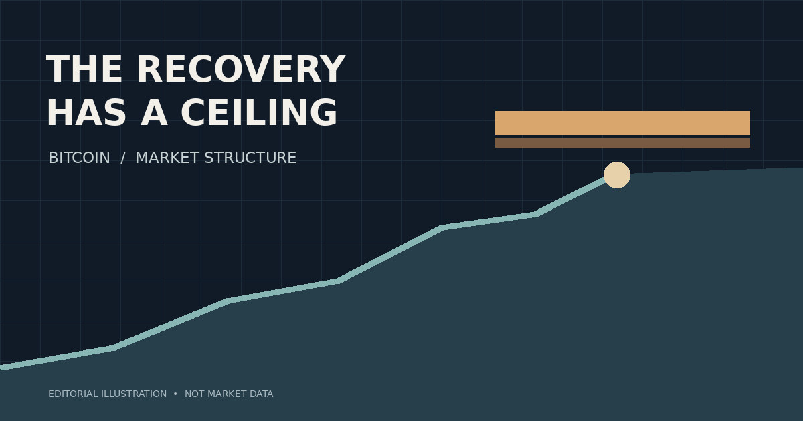

Bitcoin’s Recovery Has a Ceiling—and the Evidence Is Still Divided
A November 3 market snapshot showed improving short-term momentum beneath stubborn higher-timeframe resistance. The harder question is what would turn a rebound into a genuine reversal.

Bitcoin’s short-term recovery looked convincing in one respect: momentum had turned up. But the market’s larger structure was still telling a different story. On November 3, 2026, the price was climbing toward a resistance area that had not yet been reclaimed, while the four-hour and daily indicators remained weak.
That tension is the story. A rebound can be real without becoming a reversal. It can draw buyers back in, pressure short positions and lift momentum readings—all while leaving the prevailing trend intact. My interpretation of this snapshot is not that Bitcoin had to fall next. It is that the evidence for a durable change in direction had not caught up with the enthusiasm of the shorter timeframes.
The market was recovering, but from below
In the November 3 research snapshot, a Bitcoin mark-price observation stood at $77,416. The contemporaneous 15-minute relative strength index (RSI) was 67.58, while the five-minute reading was 65.03. Both pointed to strengthening near-term momentum. Their positive MACD histograms reinforced that interpretation.
Zoom out, however, and the picture changes. The four-hour RSI was 39.76, the daily RSI 34.91, and the four-hour MACD histogram remained negative. Bitcoin was also below its four-hour 20-period exponential moving average, approximately $77,653.55, and well below its four-hour 50-period EMA near $78,667.20.
None of these indicators predicts the next candle. Their value is comparative: the shorter-term recovery had improved before the higher-timeframe evidence did. That distinction matters because a rally against a weak larger trend faces a different burden of proof than a rally already supported across timeframes.
| Measure | 15-minute | 1-hour | 4-hour | Daily |
|---|---|---|---|---|
| RSI (14) | 67.58 | 48.56 | 39.76 | 34.91 |
| MACD histogram | +43.63 | +59.45 | −14.49 | −478.54 |
| ATR (14), USD | 172.82 | 371.03 | 750.88 | 1,986.77 |
| EMA (20), USD | 77,052.01 | 77,050.32 | 77,653.55 | 80,111.02 |
Source: November 3, 2026 historical market-indicator observations in the underlying research record. Indicator values use completed candles; the contemporaneous price may reflect an in-progress candle. These are not current market quotes.
Resistance is a test, not a prediction
The important nearby zone in the research was roughly $77,668 to $78,255. Its lower edge aligned closely with the four-hour 20-period EMA. Its upper edge corresponded to a previously mapped resistance boundary. At the observed $77,416 mark, Bitcoin remained about $252 below the lower edge.
That made the area worth watching, not worth treating as an automatic short. A test of resistance can end in rejection, consolidation or acceptance above it. A wick through a level is not the same as a completed candle establishing a new structure. The distinction becomes especially important when short-term momentum is already improving.
The bearish hypothesis required a completed 15-minute rejection, a lower high and a failed reclaim. A more convincing bullish alternative required an hourly close above approximately $78,254.50 followed by a successful retest. Neither sequence had been confirmed in the available snapshot.
Price approaching resistance is an observation. Resistance holding is an event that still needs to happen.
Derivatives positioning added suspicion, not certainty
The derivatives evidence leaned toward caution. Reported open interest fell from about $3.0921 billion to $3.0885 billion between two nearby observations, a decrease of roughly 0.12%. Funding remained reported at +0.0013% for the applicable quoted interval, whose duration was not established in the record.
A positioning breakdown also described a striking divide: accounts grouped as “smart money” were 37% long, compared with 71% long among a cohort characterized as losing traders. That sounds like a compelling contrarian signal. But labels of that kind depend on how accounts are classified, over what interval performance is measured, and whether the grouping remains representative. The positioning observation was timestamped 12:13 UTC on November 3 and was not refreshed in the later comparison.
I would not turn that divergence into a claim that sophisticated traders knew a decline was coming. It is more defensible to say that the observed positioning was consistent with a bearish interpretation while leaving substantial room for selection effects, delayed data and a short squeeze.
The overlooked variable was volatility
The four-hour average true range (ATR), a measure of recent price movement rather than direction, was $750.88. An earlier calculation had placed the four-hour ATR around $678.29, using a different calculation approach and data context. The later reading was approximately 10.7% higher.
That difference matters. A fixed stop distance that looks generous under one volatility estimate can be less forgiving under another. For a hypothetical bearish setup, the research used a $587 structural stop distance. Against the updated four-hour ATR, that represented about 0.78 ATR. It was not automatically unreasonable, but it did not leave much room for disorderly execution if volatility expanded.
The broader lesson is easy to miss when charts are reduced to entry and target lines: the geometry of a trade does not establish its realizable economics. A projected gross reward-to-risk ratio can deteriorate after fees, spread, slippage and funding. Protective stops specify intended exits; they do not guarantee a maximum loss in a fast or discontinuous market.
Three paths, and no confirmed winner
The research considered three conditional market paths. The first was a rejection from resistance, followed by a renewed move toward lower liquidity references. The second was a bullish breakout and retest above the upper resistance boundary. The third was a breakdown beneath roughly $76,386 and an unsuccessful attempt to reclaim it.
As analytical constructions, those paths were useful because each described what evidence would need to appear. They were not simultaneous forecasts and none was a recorded transaction. Two failed a minimum gross reward-to-risk screen of 2:1 even before execution costs; the remaining bearish case still lacked its required confirmation and a validated net reward-to-risk estimate.
Lower price references around $76,067 and $75,809 came from venue-specific modeled liquidation exposures. Such estimates can help identify areas worth observing, but they are not guaranteed liquidity pools, visible resting orders or inevitable destinations.
What would overturn the bearish reading?
The strongest counterargument is straightforward: the short-term recovery might be the beginning of a larger reversal, not merely a countertrend bounce. Positive near-term momentum, a rising short-term volume-balance measure and a successful reclaim of resistance would support that case. A completed hourly acceptance above the mapped upper boundary, followed by a retest that holds, would materially weaken the original rejection thesis.
The bearish alternative also has an evidence test. A move below support is not enough by itself; the more consequential event would be a completed breakdown followed by a failed reclaim. Without that sequence, a dip could remain part of a volatile range rather than a directional continuation.
There is a third possibility that deserves more respect than directional narratives usually give it: neither side wins quickly. A market can oscillate between mapped levels, punish premature entries and consume the apparent reward before any thesis is cleanly resolved.
The earlier research attached subjective scenario weights of 45% bearish, 25% bullish and 30% range-bound. They were not backtested probabilities or measured odds of a particular setup succeeding. Subsequent observations did not justify revising them, which is another way of saying the evidence had not materially changed.
Why waiting was the substantive conclusion
Between the two nearest market snapshots, Bitcoin’s reported mark moved only from $77,419.70 to $77,416—a change of about 0.005%. Open interest softened marginally. Four-hour ATR and the principal momentum indicators were unchanged. There was no confirmed hourly breakout, no confirmed breakdown and no observed rejection sequence that satisfied the original conditions.
That may sound anticlimactic. I think it is the most consequential finding in the entire investigation. Markets offer a constant supply of plausible stories, but the discipline lies in separating a plausible story from an observed transition. The bearish thesis was coherent; it was not yet proven by the events it required.
What stands out to me is how easily a recovery can be mistaken for resolution. Bitcoin had improved on the fastest charts, while the higher timeframes still demanded evidence. Until that gap closes—or a decisive rejection confirms the opposite—the intellectually defensible position is uncertainty, not manufactured conviction.